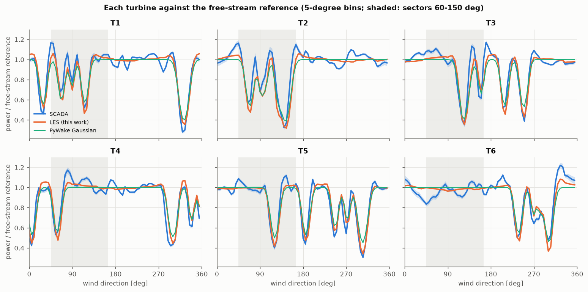
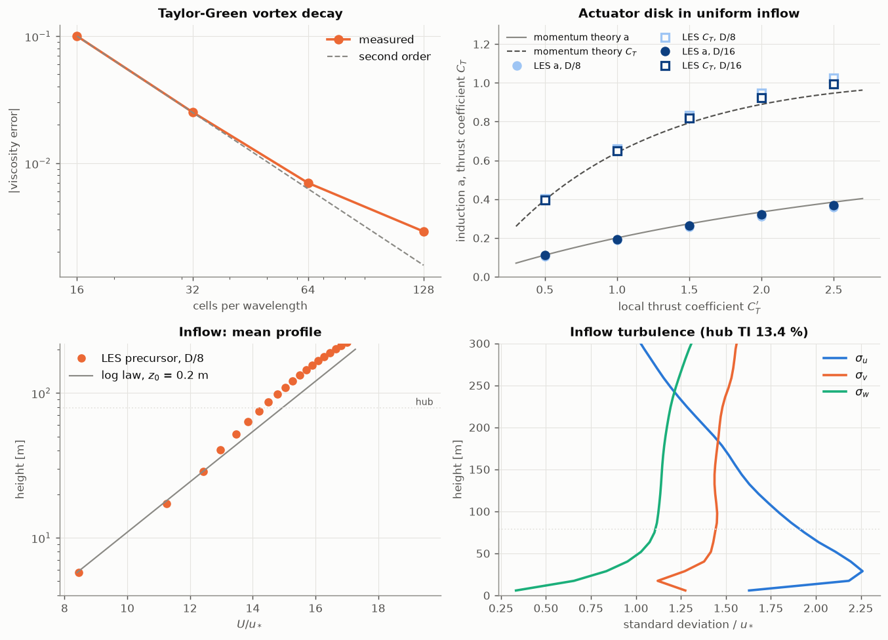
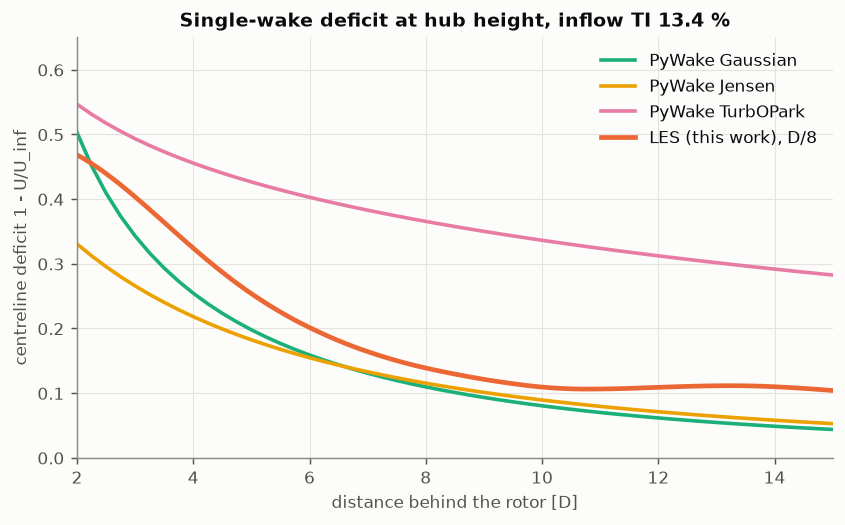
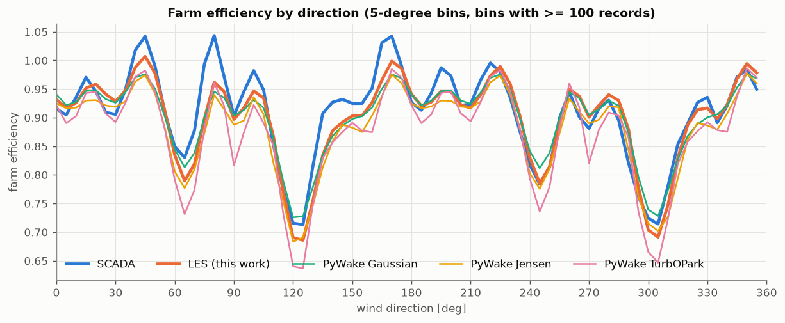
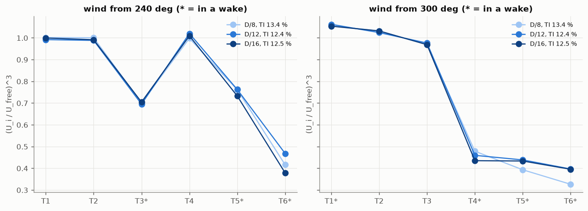
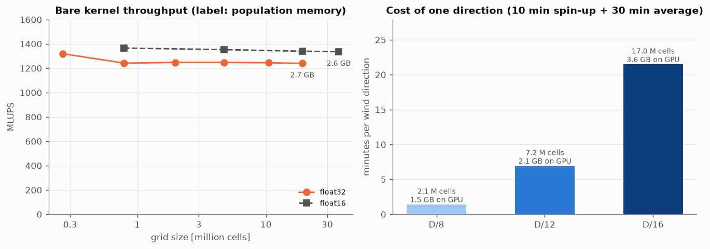

Kelmarsh wind farm in a laptop-GPU LES
A home-made lattice Boltzmann large-eddy simulation (D3Q19, regularized collision, Smagorinsky) written in NVIDIA Warp and run on a 6 GB Quadro RTX 3000. The six Senvion MM92 turbines are actuator disks in a neutral boundary layer fed by a periodic precursor. Wake losses per wind sector are compared with the farm's open SCADA data and with three PyWake engineering models, on the same records.
Hub-height flow
Instantaneous streamwise speed at hub height, 4 s between frames. The inflow turbulence comes from the precursor; every direction shown here sees the same inflow realisation (the first of two).
Wake loss per sector
Same SCADA records for every source: all six turbines in partial load, free-stream reference speed 5-10 m/s, 2016-2021. Loss = 1 - farm power / (6 x free-stream turbine power). Whiskers: SCADA 95 % day-bootstrap interval, LES ± 2 standard errors of its six 10-minute blocks from two independent inflow realisations; the circles are the two realisations on their own.
Table

Verification and cost




